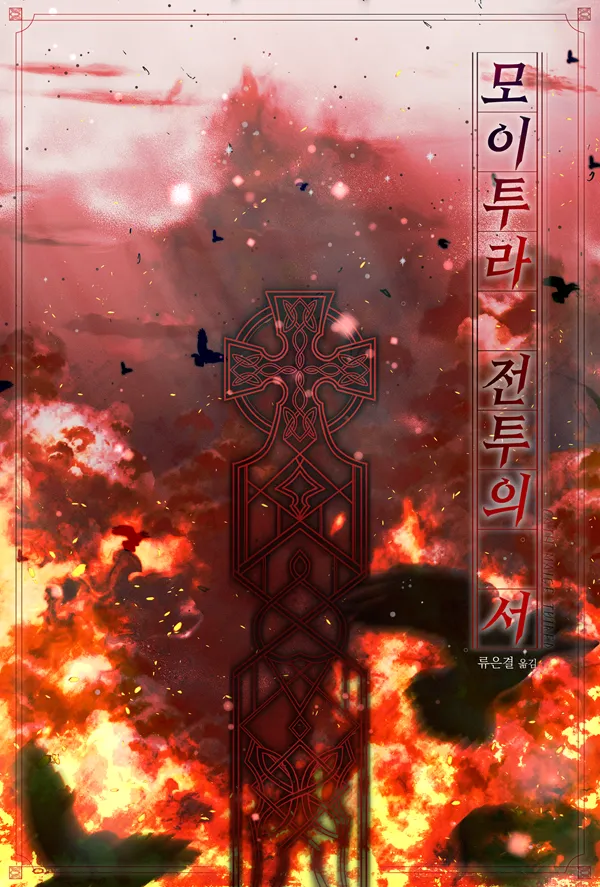

모이투라 전투의 서
아일랜드 신족의 대전쟁
Cath Maighe Tuireadh
- 발행일
- 2025년 1월 13일
- 엮은이
- 존 프레이저, 휘틀리 스토크스
- 옮긴이
- 류은결
- ISBN
- 979-11-992778-4-7 (05890)
- 정가
- 12,900원
- 페이지46판(B6)을 기준으로 측정하였습니다. 독서 환경, 개정 등에 따라 다소 변동할 수 있습니다.
- 158
소개
아일랜드에서 신족으로 살아남기, 결코 순탄치 않다!
한 번은 빼앗기 위해, 한 번은 지키기 위해,
투아하 데 다난의 명운을 걸고 벌인 두 차례의 대전쟁.
누아(누아다), 루 라와다, 모리안(모리간), 다야(다그다), 브랴스(브레스), 카르브레(코르플레), 디안 케흐트, 발로르, 슈랑(스렝)……
고대인과 신족과 마족이 뒤엉켜 싸우는 유혈과 혼돈의 도가니,
국내 유일 완역본으로 만나보세요.
목차
- I.마이 티랴의 첫 번째 싸움
- II.마이 티랴의 두 번째 싸움
미리보기 주석은 본서에서 만나보실 수 있습니다.
08
이제 에린을 탈출한 비오하흐의 아들 이바의 무리로 이야기를 돌려 보자. 그의 무리는 투아하 데 다난Tuatha Dé Danann, 곧 “다난 신족神族”이라 하였으며, 그들은 북방에서 그 명성이 온 세상에 퍼질 때까지 번영하였다. 온갖 주술과 마법에 통달한 다난 신족은 다야 모르Daghdha Mór, 곧 “위대하고 선량한 신”이라는 별명으로 불리는 뛰어난 주술사 오히 올라하르Eochaidh Ollathar를 신으로 섬겼다. 신족에게는 용감하고 강인한 영도자와 모든 기예에 능통한 이들이 있었다.
그들은 에린의 이야기를 듣고 그곳으로 가기로 결심하였다. 이 세상의 모든 무용, 온 유럽의 기예와 학식을 겸비한 대담한 영도자들이 신족의 왕 아흐타흐Eachtach의 아들 누아Nuadha를 앞세워 백성을 이끌고 배를 띄웠다. 그들은 북방의 섬에서 알바Albu의 도르Dobhar와 오르고르Ordhobhar와 [기록 유실]을 거쳐 티브라드 갸난 믹 트리운Tibraid Geanainn mic Triuin, 곧 “트리운Triun의 아들 갸난의 샘”이라 하는 곳에 이르렀다. 그들은 그곳에서 사 년을 머물다가 에린에 다다랐다.
전사들이 모든 함대를 한 곳에 모으니 그 배의 수효가 삼백 척이었다. 이때 신족의 세 시인인 카르브레Cairbre와 그의 어머니인 디안 케흐트Dian Cécht의 딸 에딘Éadaoin, 그리고 디알위Dealbhaoth의 손자이자 올룬Ollamhan의 아들인 이Aodh가 수장들에게 제언하였다.
“제공께서는 이 중 어떠한 배를 타고 에린에 가고자 하십니까? 저희는 피아흐라Fiachra의 배를 탈 것을 조언합니다.”
수장들이 이를 받아들여 피아흐라의 배에 오르고 출항을 명하니, 그로부터 삼 년과 사흘 밤낮이 지나 오월의 첫 월요일에 다난 신족은 울라의 드넓은 트라흐트 무Tracht Mugha에 상륙하였다.
다난 신족이 에린에 다다랐을 때 에린을 다스리던 피르 볼그의 고귀한 대왕, 아르크Earc의 아들 오히는 꿈에서 불길한 환영을 보았다. 왕이 이를 크게 걱정하여 경외와 당혹에 빠져 깊이 고뇌한 끝에 그의 현인 캬사르Ceasardh에게 꿈을 말하였다.
“왕께서는 어떠한 환상을 보셨습니까?”
“저 넓은 바다의 심연에서 검은 새의 커다란 무리가 날아오는 것을 보았소. 그들이 우리 모두의 위로 날아들어 에린의 백성과 싸웠고, 우리를 혼란에 빠뜨린 끝에 파멸로 몰아넣었소. 그러나 우리 가운데 한 사람이 새떼 가운데 가장 고귀한 새를 쳐 날개 하나를 잘라내었다오. 캬사르여, 그대의 기예와 지식으로 이 환영의 의미를 해설하여 주오.”
그리하여 캬사르는 의식을 행하고 그의 학문으로 점복을 해설하여 왕이 본 환상의 의미를 밝혀내었다.
바다를 건너는 칠흑의 군단을 보라
수천의 전사들이 대양을 채우는구나
얼룩진 배는 해안을 부수며 나아가고
모든 기예에 능한 백성은 노래하네
더 큰 죽음과 우리 모두의 파멸을
요정은 거짓 징조를 보여 기만하고
오랜 발걸음은 평화를 연주하나니
모든 다툼에서 그들이 승리하리라
오히 왕이 해몽을 듣고 깊이 우려하였다.
“그 말인즉슨 먼 이방에서 외적이 에린을 침탈하러 오고 있다는 뜻이로구려!”
09
다난 신족은 에린에 도착하자마자 그들의 모든 배를 부수고 불태운 뒤 코나흐타 동쪽 브레프네Breifne의 슐레브테 루아 렌Sléibhte Rúaidh Réin, 곧 “리안Rian의 붉은 언덕들”로 나아가 그곳에 멈추어 진을 쳤다. 신족의 마음과 정신은 선조의 고향에 다다랐다는 만족으로 충만하였다.
다난 신족은 가장 아름답고 흥겨우며 빼어난 용모를 지닌 이들이었다. 그들의 병기와 의복은 가장 뛰어나고 노래하는 목소리와 악기 다루는 솜씨를 견줄 데가 없었다. 참으로 지금까지 에린을 밟은 민족 가운데 그들보다 더 고결한 정신과 성품을 지닌 이들이 없었다. 또 싸움에 임할 적에는 가장 용맹한 전사가 되어 적에게 끔찍한 공포와 전율을 안겼으니, 모든 기예와 재주에서 이 세상의 그 어떠한 족속도 신족을 뛰어넘을 수 없다고 말함이 이러한 연유이다.
다난 신족이 에린에 다다랐다는 소식을 들은 피르 볼그가 의논하여 이렇게 정하였다.
“저 무리가 어디에서 왔으며 어디에 자리 잡으려 하는지 알 수 없음은 우리에게 참으로 불리한 일이다. 그러니 슈랑Sreang을 보내 그들을 살피게 하자. 그는 기골이 장대하며 품성이 사납고 거치니 그 용모만으로 적에게 두려움을 절로 안기는 용사일지며, 군세를 정찰하고 이방인을 마주하는 데에 거리낌이 없도다.”
그러자 슈랑이 일어나 갈고리처럼 굽은 그의 적갈색 방패와 두 자리의 굵은 투창, 죽음을 부르는 보검, 멋드러진 사각 투구와 육중한 쇠 몽둥이를 들고 리안 언덕으로 향하였다. 그곳에 있던 다난 신족이 거대하고 두려운 사내가 홀로 다가오는 것을 보고 말하였다.
“저기 한 사내가 홀로 오고 있다. 필시 정보를 캐러 온 것일 터이니 우리도 누군가를 보내어 그와 대화하게 하자.”
그리하여 알라하Ealatha의 아들 브랴스Breas가 방패와 검과 두 자루의 큰 장창을 들고 일어나 그를 살피고 이야기를 나누러 나아갔다. 슈랑과 브랴스는 서로의 말이 들릴 거리까지 다가가서 말없이 서로를 날카롭게 쏘아보았다. 두 사람 모두 서로가 든 육중한 무기와 두려운 용모에 놀랐다. 브랴스의 거대한 장창에 놀란 슈랑은 방패를 그의 얼굴 앞에 두고 땅에 세웠다. 브랴스도 침묵하며 방패를 앞에 내려놓았다.
그리고 그들은 서로 인사를 나누었는데, 두 사람이 쓰는 언어가 다름이 없었으니 이는 그들이 모두 네바의 자손이므로 기원이 같았기 때문이다. 그리하여 그들은 자신이 누구이며 선조가 누구인지를 이렇게 설명하였다. 슈랑이 화평을 청하여 말하기를,
“네바로부터 내려오는 너의 계보
너의 이야기가 나의 귀에 들어올 때
나의 살과 혀는 기쁨에 젖어 춤추니
네 말씨가 참으로 즐겁고 유쾌하구나!
우리의 혈통이 시묜으로부터 내려오며
우리의 친족이 시묜에게서 기원하나니
우리 두 일족의 뿌리가 같음이 이러하노라
우리 두 일족의 사람은 형제와도 같노라.
지금이야말로 이 사실을 마음에 새기자
나와 너의 피와 살은 하나의 핏줄이나니.
네 긍지를 낮추고 네 마음을 가까이 하라
형제 됨을 기억하고 백성의 멸망을 막으라.”
그러나 브랴스가 평화를 단호히 거절하였다.
“우리의 기개는 창공과 같이 드높으며
우리의 긍지는 군왕과 같이 위대하니
적에게 맞서 싸우는 우리 사납도다!
너희 일족은 우리를 꺾지 못하리라.
우리 일족이 모여 행진함을 보았느냐
숱한 사람이 짓밟히는 거대한 진격을?
그 누가 즐거움을 가져오려 할지라도
그가 우리를 즐겁게 하지는 못하리라!”
브랴스가 슈랑에게 말하였다.
“그대의 몸과 얼굴을 가린 방패를 치우시오, 그리하여야 내가 신족에게 돌아가 그대의 용모를 설명할 수 있으리니.”
“그리하겠소. 나 참으로 그대가 지닌 날카로운 무기를 두려워하여 우리 사이에 방패를 두었던 것이오이다.”
슈랑이 방패를 들어 올리자 브랴스가 슈랑의 투창을 가리키며 물었다. 브랴스는 태어나서 투창이라는 물건을 처음 보았기에 이를 기이하게 여겼다.
“그것 참으로 기이하고 독기 서린 무기로구려. 그대의 일족 모두의 무기가 그와 같다면 더욱 기이한 일이겠소이다. 내게 그 무기를 보여 주지 않겠소이까?”
“기꺼이 보여 주리다.”
슈랑이 굵은 자루의 투창을 풀어 드러내 보이고 말하였다.
“이 무기를 어찌 생각하오?”
“잘 보이는구려. 참으로 거대한 무장이오. 끝이 넓적하고 튼튼하고 묵직하며 힘세고 날이 잘 섰소이다.”
슈랑의 투창을 본 브랴스가 이러한 노래를 불렀다.
슬프도다, 그들이 찌르는 자여
슬프도다, 그들이 던지는 자여
슬프도다, 그들이 겨누는 자여
너희 참으로 고난의 씨앗이라!
그 힘센 타격에 죽음이 있나니
한 번의 일격에 파멸이 있나니
잔혹한 놀이에 상흔이 있나니
그들의 공포가 참으로 크도다!
브랴스가 슈랑에게 물었다.
“이 무기를 무엇이라 부르오?”
“투창이라 하오.”
“참으로 뛰어난 무기로구나! 투창이여, 네 이름은 멍든 살점과 솟구치는 피를, 부서진 뼈와 조각난 방패를 뜻하는구나, 확실한 상흔과 임박한 재앙을, 죽음과 영원한 상처를 뜻하는구나! 그대의 무기가 날카롭고 적의를 품어 목숨을 노리나니, 투창을 지닌 군대의 마음에 참으로 형제를 기꺼이 죽이고자 하는 분노가 도사리는도다. 자, 우리 이제 맹약을 맺으세!”
그리하여 슈랑과 브랴스가 서로에게 가까이 다가갔다. 브랴스가 물었다.
“슈랑이여, 어젯밤을 어디서 보냈소이까?”
“에린의 신성한 중심인 탸우르의 제왕의 요새에서 보냈소이다. 그곳에 피르 볼그의 군주와 제후, 그리고 온 에린의 고귀한 대왕 오히가 거하오. 그대는 어디서 왔소이까?”
“저 산비탈에 사람이 붐비는 널찍한 진영이 보이리니, 나 그 언덕에서 왔소이다. 그곳에 다난 신족이 있으며, 그들의 왕, 아다를라우Eadarlámh의 손자이자 아흐타흐의 아들인 누아가 있소. 그들은 세상의 북녘에서 안개 구름과 요술 소나기를 타고 서쪽 에린 땅으로 내려왔다오.”
그러나 이렇게 말하는 브랴스 본인도 그 말을 믿지 않았다. 차설, 그때 슈랑이 말하였다.
“내게 먼 여정이 남았으니 이제 가야만 하겠구려.”
“그러시오. 여기 내가 가져온 두 장창 가운데 한 자루를 그대에게 주리니, 이를 그대의 일족에게 보여 신족의 무기의 본보기로 삼으시오.”
브랴스가 슈랑에게 그의 장창을 주었고, 슈랑도 브랴스에게 투창 하나를 주어 피르 볼그의 무기의 본보기로 삼게 하였다. 브랴스가 다시 말하였다.
“그대의 일족 피르 볼그에게 전하시오, 우리 일족과 맞서 싸우거나 에린의 절반을 내어 주어야 할 것이라고.”
“참으로 맹세하노니 그대들의 무기에 맞서기보다는 차라리 에린의 절반을 내어 주는 것이 낫겠구려!”
그렇게 두 사람은 우정의 맹약을 맺고 평화롭게 헤어졌다.